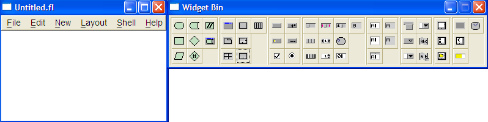
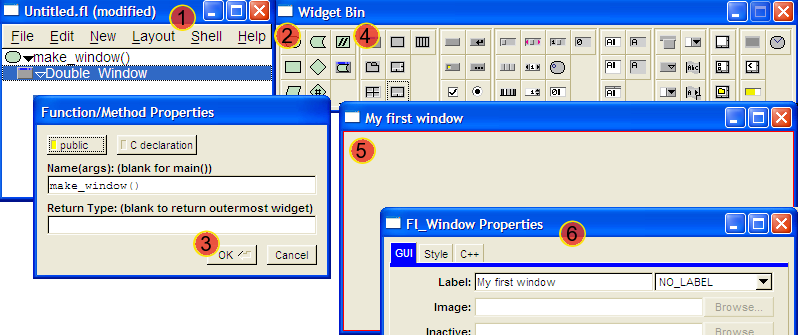
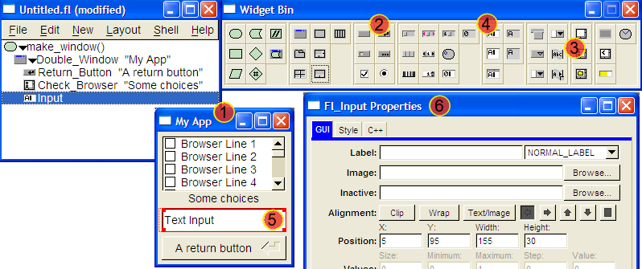
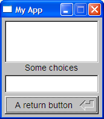
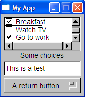

Using FLUID to generate our UI
Although being able to use FLTK from within Lua is great it is a pain to have to learn all those widgets and work out the coordinates and sizes ...
Wouldn't it be nice if we could use the UI designer FLTK has to create our UI's ?
The problem is that FLTK is a C++ toolkit, and as a consequence C++ is what FLUID generates.
Enter "convertFluidToMurgaLua" ... My effort at a generic FLUID C++ to Lua converter :-)
Now superseded by lua_from_fluid ...
Anyway, lets take a look at how to create UI's in FLUID for Lua.
Run the FLUID executable that you'll find in "bin", and you should see something like this :

Note : It is all too easy to "loose" the widget bin, in this case go to the "Edit / Show Widget Bin" menu or hit CTRL-B.
Anyway, the FLTK distribution contains a tutorial on how to use FLUID, but in order to use it for LUA code generation you'll be better off following these simple instructions. Lets go through it step-by-step ...
Creating the Window

And now it's time to ...
Put some stuff on the window :

Create the files
OK, now you can save your design and generate the code :
Now just go to the command line and try the following (if you saved to the "examples" directory) :
$ ../bin/Windows/murgaLua.exe ../tools/lua_from_fluid.lua MyApp.fl - > MyApp.lua
$ ../bin/Windows/murgaLua.exe MyApp.lua
The first command creates a LUA file from the FLUID GUI definition.
So after running the second line you should see something like this (depending on your design) :

The contents of "MyApp.lua" should be something like this :
(More or less as the converter has improved)
do
local object = fltk:Fl_Double_Window(166, 165, "My App");
window = object;
fltk:Fl_Return_Button(5, 130, 155, 30, "A return button");
fltk:Fl_Check_Browser(5, 5, 155, 70, "Some choices");
fltk:Fl_Input(5, 95, 155, 30);
end
window:show();
Fl:run()
The next thing is to put some logic ... Make the UI do something.
For example we could :
After about 5 minutes things would look like this :
do
local object = fltk:Fl_Double_Window(166, 165, "My App");
window = object;
fltk:Fl_Return_Button(5, 130, 155, 30, "A return button");
-- Step one, name the objects
myOptions = fltk:Fl_Check_Browser(5, 5, 155, 70, "Some choices");
myField = fltk:Fl_Input(5, 95, 155, 30);
-- Step two, add some values to the check browser ...
myOptions:add("Shower and shave")
myOptions:add("Breakfast")
myOptions:add("Watch TV")
myOptions:add("Go to work")
myOptions:add("Call the plumber")
-- Step tree, put in some code to react to a value-change
myField:callback(
function(myField)
fltk.fl_message("Changed the value to \"" .. myField:value() .. "\"")
end)
end
window:show();
Fl:run();
This is a simple example, and hopefully took just a few minutes to complete.
Once you have the code above you should see the following when running it.

Now on to something more complicated ...